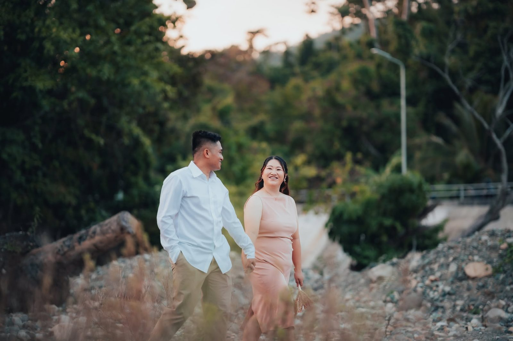

His & Hers
Just Between Us
Seven questions for Claire & Dodong. The two answers each.

Question 01
What's a small detail from your early days together that you've never forgotten?
HisMANLOURD
Na midbidan ko siya na sobrang malumanay siyang babae. May times dati na sa sobrang luway ning boses niyang mag talam dai ko na siya na dadangog lalo pag ga motor kami kaya pa ulit-ulit ko yapa utro sainya su yasabi niya.
HersCLAIRE
I’ll never forget his simple “Hi, sec” message during our college days. It seemed like such a small thing back then, but I never imagined that those two little words would become the beginning of our love story.
Question 02
Describe him/her in three words, then tell a story that proves your given words.
HisMANLOURD
- Sobra-sobrang boot niya to the point na minsan na abuso na ang kabootan niya pero okay lang ito sainya.
- Matalino siya kaya lalo akong namoot sainya.
- Wife material. Alam kong pag abot sa mga asikasuhon sa laog ning halong kaya niya gabos. Sobrang linig buda organized na babae, siya yung tipong maski gahigda na siya na hihiling niya pa kung ano ang mga gamit ang dai naka pantay sa pang hiling niya maski saday na ati an nahihiling an kang saday niyang mata. Sobrang alaga buda asikaso niya din ako, sa mga gamit ko na gabos an nakahanda na, sa pag kaon ko na maabot ako haring duty pag aduman siya sa Manila mahungit na lang talaga ako ning pag kaon na niluto niya.
HersCLAIRE
- He has the kind of patience that amazes me. Sometimes, I honestly wonder where he gets it because no matter how difficult things get, he always finds a way to be patient with me.
- He is a man whose heart is anchored in God. Even when miles stand between us, he still finds a way to bring us together in prayer, especially before we close our eyes at night. He reminds me that our love should always have God at its center, because he believes that a love guided by Him is a love that will endure. His fear of disappointing the Lord reflects how deeply he longs to walk in His ways. And to me, there is something beautiful about loving a man who doesn’t just pray for our future but also makes sure that God is part of our journey toward it. (Talagang bagay sakanya ang pangalan niyang ManLOuRD)
- Lastly, he has such a beautiful heart. One of the things that amazes me most is how deeply he loves his Lola. Seeing how much he cares for her makes me realize that his love is not just something he says, it is something he shows through his actions.
Question 03
What's a funny or unusual habit of his/hers that you secretly love?
HisMANLOURD
Kang dati na daing dai pa talaga ako ga poon-poon pa sana mag trabaho ang motor na yaggamit ko ay lumang Barako. Siya gustong-gusto niya talaga ang garibot kung sain-sain ya su motor na gamit ko diit na gamit madali maubos ang gasolina. Ya talaman ko siya na dai na maribot ta uyag-uyag ngani ang motor dai na siya maribok kaya ang gibo ko man maski uyag-uyag ang motor ilibot ko siya maski mag ganoy ako pag dai na gaandar su motor para maugma siya. Sobrang ugma ning puso ko pag maugma siyang ga ribot kami gakulukanta pa an sa rikod ko habang ga ribot kami.
HersCLAIRE
Every time we have to say goodbye, whether I’m returning to the island or he’s the one leaving, he always finds a way to make our parting feel a little lighter. He always says, “Next month ha? Punta ka sako. May bagong bukas na Uniqlo ipuntahan ta tapos ibakal ko gusto mo.” Wala naman talagang bagong bukas na store ng Uniqlo he just finds little excuses para mag kasama kami ulit kahit ilang araw.
Question 04
When did you feel most proud to be with him/her?
HisMANLOURD
Sobrang proud ako sainya sa mga naabot niya sa buhay. Gabos na pangarap niya na tiga hagad niya kay Lord yatao sainya and proud na proud ako duman dahil alam kong sobrang deserved niya ang mga ito dahil sobrang boot niyang tao.
HersCLAIRE
Dati pa naman proud na ako sakaniya sa sobrang bait niya hindi lang sa akin pati na rin sa mga tao at mga animals na nasa paligid niya pero mas naging proud ako sakanya yung time na naging MIU na siya, hindi nag bago ang pakikitungo niya sa mga taong nasa paligid niya at ayaw niyang tinatawag siya ng “Sir” ng mga barkada niya. Palagi niya pang sinasabi “Mata sa langit, paa sa lupa”.
Question 05
If you could relive one day of your story together, which would it be?
HisMANLOURD
Kung igwa man akong chance na ibalik ang aldaw ito yung permi kaming mag kaibahan na duwa para dai ko na siya nahiling na ga hibi every time na malarga nanaman ako ta ma duty. Sobrang kulog ning puso ko na nahihiling ko siyang sobrang hibi niya tapos naki-mahilak siya na galuhod pati sako na dai na ako mag hari buda sa Virac na sana ako mag duty.
HersCLAIRE
I would relive one of those extraordinary days when we were together, when nothing extraordinary happened, yet everything felt right simply because I had him beside me. I would cherish every little moment, every laugh, every embrace, and even the quiet moments when we didn’t need words to feel loved. Because after all the goodbyes, the distance, and the days spent missing each other, I’ve learned that the most precious moments are not always the grandest ones. Sometimes, they are the simplest days when I could hold his hand, look into his eyes, and feel grateful that, out of all the people in this world, I get to love him so deeply.
Question 06
When was the exact moment you thought, “Siya na talaga”?
HisMANLOURD
Alam ko sa sadili ko na dati sobrang pasaway ko din talaga during my teenage years hanggang sa nag-abot siya sa buhay ko sinabi ko sainya na padiit-diit ibabago ko ang sadili ko dai niya lang ako bayaan. Naging maayos ang buhay ko. Duman ko na realize na ining babaeng ini habo ko na mawala sako, siya ang gusto ko makaiba hanggang mag gurang ako. Inibahan niya ako sa mga aldaw na daing-dai buda dapang-dapa ako na dai siya nag hagad ni-anong kapalit. Naalala ko pa su sinabi niya sako kang ga asikaso ako kaito ning mga requirements sa PCG, sabi niya handa siyang maubos matupad ko lang ang pangarap ko dahil sobrang awat mi din ini pinag dasal kay Lord kaya daing rason para pakulgan ko siya.
HersCLAIRE
Yung one day, pumunta kami ng Nazareno Chapel tapos tinanong ko siya kung ano yung palaging prayer niya kay Lord tapos ang sagot niya “Ika sana permi ang laog ning dasal ko.” That moment, I realized just how deeply this man loves me. And in my own prayers, I ask God to let him be the man I would spend the rest of my life with, because deep in my heart, I felt that no one else could ever love me quite the way he does.
Question 07
What are you looking forward to the most as husband and wife?
HisMANLOURD
Mag kaigwa kami ning halong na duman mi ibuo ang saday na pamilyang gusto mi kung sain mangibabaw permi ang kaugmahan, pagmamahalan buda peace at matagumpayan mi gabos na pag subok na maabot samo as mag agom.
HersCLAIRE
Building a home with him where love, faith, and peace always dwell. I look forward also to waking up beside him, sharing the simplest moments and facing life’s uncertainties hand in hand. I dream of growing old with him, celebrating our little victories, and standing by each other through every storm.